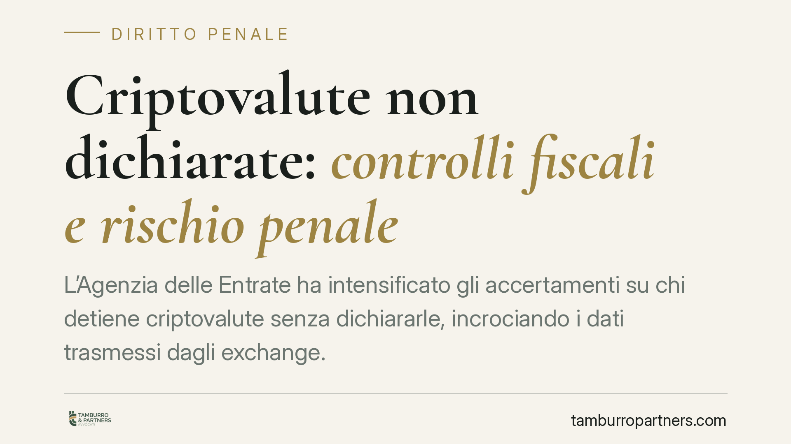

Criptovalute non dichiarate: controlli fiscali e rischio penale
L'Agenzia delle Entrate ha intensificato gli accertamenti su chi detiene criptovalute senza dichiararle, incrociando i dati trasmessi dagli exchange. Con il recepimento della DAC 8 e l'entrata a regime di MiCAR, il quadro dei controlli diventa strutturale. Distinguere il piano tributario da quello penale è essenziale per valutare l'effettivo rischio del contribuente.

Il contesto: dai controlli mirati allo scambio automatico
L'Agenzia delle Entrate ha avviato accertamenti mirati nei confronti dei contribuenti che detengono valute virtuali senza averle indicate nel quadro RW e senza aver dichiarato le eventuali plusvalenze. La leva operativa è l'incrocio dei dati provenienti dagli exchange e dai prestatori di servizi (service provider).
Il passaggio decisivo arriverà con l'operatività dello scambio automatico di informazioni introdotto dalla Direttiva DAC 8, recepita in Italia con il D.lgs. 194/2025. A regime, gli operatori del settore comunicheranno periodicamente all'Amministrazione i dati dei clienti e delle relative movimentazioni. Sul piano della vigilanza, il Regolamento MiCAR sposta le competenze su Banca d'Italia e Consob, portando il comparto cripto dentro un perimetro regolamentato.
Inquadramento fiscale: la soglia non c'è più
La Legge 197/2022 aveva introdotto un regime organico di tassazione delle cripto-attività, prevedendo l'imposizione delle plusvalenze superiori a una franchigia di 2.000 euro annui. Va segnalato che tale soglia è stata abrogata dalla Legge di bilancio 2025: dal periodo d'imposta 2025 le plusvalenze concorrono a tassazione senza franchigia (informazione da verificare rispetto alla normativa vigente al momento della lettura).
Restano fermi gli obblighi di monitoraggio fiscale: le cripto-attività vanno indicate nel quadro RW, indipendentemente dalla realizzazione di plusvalenze.
Il piano penale: soglie e dolo
È fondamentale non confondere l'irregolarità tributaria con il reato. La rilevanza penale, disciplinata dal D.lgs. 74/2000, scatta solo al superamento di precise soglie e in presenza dell'elemento soggettivo richiesto.
Per l'omessa dichiarazione (art. 5) la punibilità presuppone un'imposta evasa superiore a 50.000 euro per singola imposta. Per la dichiarazione infedele (art. 4) la soglia è più elevata: imposta evasa superiore a 100.000 euro e, congiuntamente, elementi attivi sottratti a imposizione superiori al 10% del totale dichiarato (o comunque oltre due milioni di euro). Le soglie vanno sempre verificate rispetto al testo vigente.
Sotto tali importi la condotta resta sul piano amministrativo-tributario, con sanzioni pecuniarie ma senza conseguenze penali.
Decisivo è poi l'elemento soggettivo. Entrambe le fattispecie richiedono il dolo specifico di evasione, cioè la volontà di sottrarre imposte. Per il detentore retail — spesso privo di consapevolezza degli obblighi dichiarativi, o convinto in buona fede di non doverli assolvere in assenza di realizzo — l'accertamento del dolo non è affatto automatico. La ricostruzione della condotta, delle movimentazioni e delle conoscenze effettive del contribuente diventa centrale nella difesa.
Ravvedimento: attenuante e non punibilità
Il ravvedimento operoso consente di regolarizzare la posizione tributaria versando imposte, interessi e sanzioni ridotte. Sul piano penale, però, gli effetti vanno precisati.
La causa di non punibilità prevista dall'art. 13 D.lgs. 74/2000 opera in modo pieno per i reati di omesso versamento (artt. 10-bis e 10-ter), a condizione che il debito sia integralmente estinto entro i termini previsti. Per l'omessa (art. 5) e l'infedele (art. 4) dichiarazione la non punibilità è riconosciuta solo entro presupposti temporali stringenti — in particolare quando il ravvedimento interviene prima che il contribuente abbia avuto formale conoscenza di accessi, ispezioni, verifiche o procedimenti. Fuori da tali condizioni, il pagamento del dovuto opera come circostanza attenuante, non come esclusione del reato.
Cosa cambia per il contribuente
La tracciabilità dei dati riduce drasticamente i margini di opacità. Chi ha operato su exchange conformi deve attendersi che quelle informazioni siano, prima o poi, disponibili all'Amministrazione. La regolarizzazione spontanea, quando ancora possibile, resta lo strumento più efficace per contenere sanzioni e rischio penale.
Cosa fare in concreto
- Ricostruisci la posizione: recupera lo storico completo delle operazioni su ogni exchange e wallet, distinguendo tra semplice detenzione e realizzo di plusvalenze.
- Verifica gli obblighi RW: controlla se le cripto-attività sono state indicate nel quadro di monitoraggio per ciascun anno rilevante.
- Valuta il ravvedimento prima dell'accertamento: agisci quando non hai ancora ricevuto comunicazioni formali, così da massimizzare gli effetti anche penali.
- Non versare a caso: quantifica correttamente imposte, interessi e sanzioni con un professionista, per evitare regolarizzazioni parziali inefficaci.
- Conserva la documentazione: ogni elemento utile a dimostrare la buona fede è rilevante ai fini della difesa sull'elemento soggettivo.
Consigliamo di affrontare la materia con un'analisi personalizzata: le soglie, i termini e gli effetti del ravvedimento dipendono dalla situazione concreta e dalla normativa vigente al momento dell'intervento.
---
Contributo informativo a cura di Tamburro & Partners - Avv. Giuseppe Tamburro. Non costituisce parere legale.
Ogni condominio ha una storia a sé.
Se gestisci un'amministrazione e vuoi un confronto su una specifica questione condominiale, scrivi allo studio. Ti rispondiamo entro un giorno lavorativo.